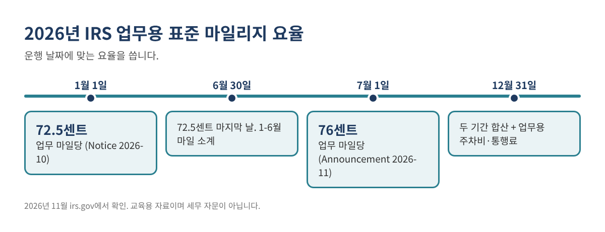
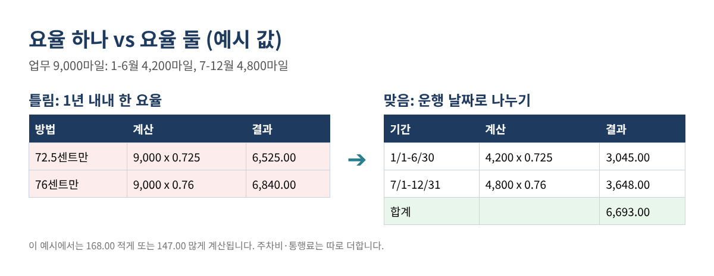
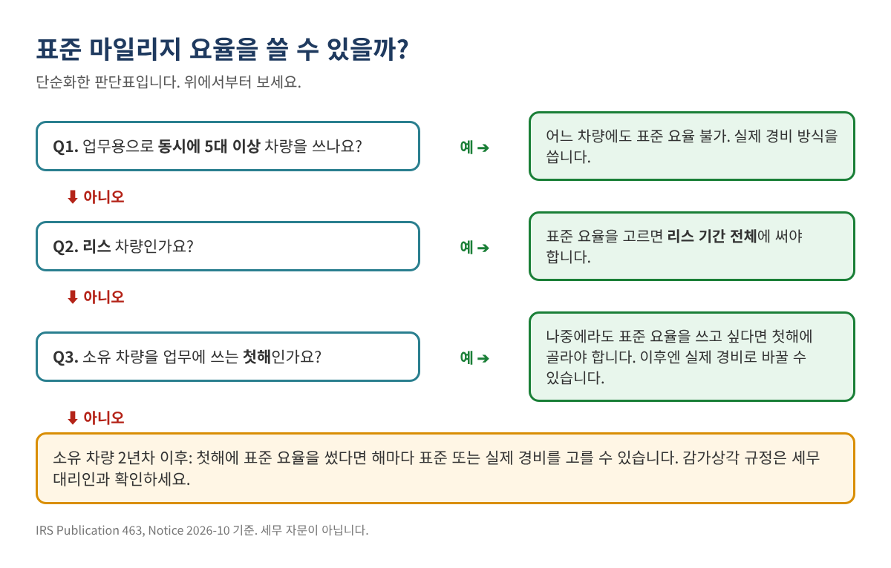

2026년 마일리지 요율이 연중에 바뀌었습니다: 업무용 운행 기록과 공제액 바르게 계산하는 법
사업 때문에 운전하신다면 2026년에는 주의할 점이 하나 있습니다. IRS 업무용 표준 마일리지 요율이 1월 1일부터 마일당 72.5센트였다가, 2026년 7월 1일 이후 운행분부터 76센트로 올랐습니다. 무료 템플릿이나 앱 상당수가 1년 내내 요율 하나만 써서, 공제액이 많게든 적게든 틀어집니다.
이 글은 IRS가 요구하는 운행 기록을 남기는 법, 운행 날짜에 맞는 요율을 자동으로 적용하는 법, 주차비·통행료를 더하는 법, 표준 마일리지 방식과 실제 차량비 방식을 비교하는 법을 엑셀(또는 Google Sheets)로 설명합니다.
이런 분께 필요합니다: 개인 차나 사업용 차로 일하는 자영업자, 프리랜서, 배달·라이드 기사, 컨트랙터, 부동산 에이전트, 소상공인.
2026년 요율 (irs.gov 확인)
| 운행 날짜 | 업무용 마일당 요율 | 근거 |
|---|---|---|
| 2026년 1월 1일 - 6월 30일 | 72.5센트 | IRS Notice 2026-10 |
| 2026년 7월 1일 - 12월 31일 | 76센트 | IRS Announcement 2026-11 |
표 1. 2026년 업무용 표준 마일리지 요율. 의료·이사·자선 요율은 다르며 이 글에서는 다루지 않습니다.

업무용 주차비와 통행료는 표준 요율과 별도로 더 공제합니다. IRS Publication 463은 "표준 마일리지 요율에 더해 업무 관련 주차비와 통행료를 공제할 수 있다"고 설명합니다. 다만 평소 일하는 곳의 주차비는 출퇴근 비용이라 해당되지 않습니다.
1단계: 어떤 운행이 들어가는지 알기
- 업무 운행은 들어갑니다: 손님·현장·거래처 방문, 사업 입금하러 은행 가기, 일하는 장소 두 곳 사이 이동.
- 출퇴근은 안 됩니다. Publication 463: 집이 평소 일하는 곳에서 아무리 멀어도 출퇴근 비용은 공제할 수 없습니다.
- 업무 운행 중 개인 용무로 들른 곳은 개인 운행입니다. 업무 부분만 기록하세요.
홈 오피스가 있거나 정해진 일터가 없는 경우 출퇴근 규정이 더 복잡하니, 본인에게 어떻게 적용되는지 세무 대리인과 확인하세요.
2단계: 기록표 만들기
IRS는 4월에 기억으로 다시 만든 추정치가 아니라 운행 당시 또는 그 무렵에 남긴 기록을 원합니다. Publication 463은 대략 추정한 금액은 공제할 수 없다고 합니다. 기록표에는 아래 열이 있으면 좋습니다.
| 날짜 (A) | 출발 주행계 (B) | 도착 주행계 (C) | 마일 (D) | 왕복 (E) | 목적지 (F) | 업무 목적 (G) | 주차·통행료 (H) |
|---|---|---|---|---|---|---|---|
| 2026-01-15 | 42,180 | 42,204 | N | Kim Dental, Fort Lee | 설치 견적 | 6.00 | |
| 2026-03-02 | 18 | Y | Hardware store, Ridgefield | 자재 구입 | 0.00 | ||
| 2026-07-09 | 46,310 | 46,356 | N | 고객 현장, Paramus | 월 정기 서비스 | 12.50 |
표 2. 예시 값입니다. 주행계 숫자를 넣거나 마일만 적어도 수식이 둘 다 처리합니다.
1월 1일과 12월 31일 주행계 숫자도 꼭 적어 두세요. 업무 사용 비율을 계산하려면 연간 총 주행거리가 필요합니다.
3단계: 수식 넣기
운행별 업무 마일 (I열). 주행계 숫자가 있으면 그것을, 없으면 D열 마일을 쓰고, 왕복이면 2배:
I2: =IF(AND(B2<>"",C2<>""), C2-B2, D2) * IF(UPPER(E2)="Y", 2, 1)
운행 날짜별 요율 (J열):
J2: =IF(A2<DATE(2026,7,1), 0.725, 0.76)
요율표를 따로 두면 내년에 고치기 쉽습니다. Rates 시트에 시작일과 요율을 적고(A2: 2026-01-01, B2: 0.725 / A3: 2026-07-01, B3: 0.76) 이렇게 씁니다.
J2: =XLOOKUP(A2, Rates!$A$2:$A$10, Rates!$B$2:$B$10, "", -1)
-1은 운행일 이전(같은 날 포함) 중 가장 최근 시작일을 찾으라는 뜻입니다. 예전 엑셀은 날짜를 정렬한 뒤 =VLOOKUP(A2, Rates!$A$2:$B$10, 2, TRUE)로 같은 결과를 얻습니다.
마일리지 금액 (K열):
K2: =ROUND(I2*J2, 2)
기록 점검 (L열)으로 흔한 실수를 잡습니다.
L2: =IF(G2="","목적 누락",IF(AND(B2<>"",C2<>"",C2<B2),"주행계 오류",IF(YEAR(A2)<>2026,"연도 오류","")))
4단계: 연간 합계
1-6월 마일: =SUMIFS(I:I, A:A, "<"&DATE(2026,7,1)) 7-12월 마일: =SUMIFS(I:I, A:A, ">="&DATE(2026,7,1)) 마일리지 금액: =SUM(K:K) 주차·통행료: =SUM(H:H) 업무 사용 비율: =SUM(I:I) / (12월 31일 주행계 - 1월 1일 주행계)
총 15,000마일 중 업무 9,000마일인 예시입니다(예시 값).

| 항목 | 금액 |
|---|---|
| 1-6월: 4,200마일 x 0.725 | 3,045.00 |
| 7-12월: 4,800마일 x 0.76 | 3,648.00 |
| 업무용 주차비·통행료 | 180.00 |
| 표준 마일리지 방식 합계 | 6,873.00 |
| 업무 사용 비율: 9,000 / 15,000 | 60% |
| 실제 비용: 주유 2,400 + 보험 1,500 + 수리 650 + 등록비 250 | 4,800.00 |
| 업무 부분: 4,800.00 x 60% | 2,880.00 |
| 업무용 주차비·통행료 가산 | 180.00 |
| 실제 경비 방식 합계 (감가상각 전) | 3,060.00 |
표 3. 예시 값입니다. 감가상각이나 리스료에 따라 실제 경비 쪽이 크게 달라질 수 있으니 첫 비교용으로만 보세요.
5단계: 표준 요율과 실제 경비 중 무엇을?
선택에는 IRS 규정 몇 가지가 걸립니다. Publication 463과 Notice 2026-10의 내용을 간단히 정리하면 이렇습니다.

- 소유 차량: 표준 요율을 쓰려면 차를 업무에 쓰기 시작한 첫해에 표준 요율을 골라야 합니다. 그다음 해부터는 둘 중 하나를 고를 수 있습니다.
- 리스 차량: 표준 요율을 고르면 리스 기간 전체에 써야 합니다.
- 동시에 5대 이상(플릿 운영 등): 어느 차량에도 표준 요율을 쓸 수 없습니다.
실제 경비 방식에는 감가상각(또는 리스료)이 들어가고, 여기에는 한도와 시기 규정이 따로 있습니다. 두 합계가 비슷하거나 새 차라면 세무 대리인에게 계산을 맡기세요.
자주 하는 실수
- 1년 내내 요율 하나만 사용. 위 예시에서 147.00-168.00 차이가 납니다.
- 집에서 평소 일터까지 출퇴근 마일을 기록.
- 세금 낼 때 기억으로 기록을 다시 만듦. 운행 당시에 남긴 기록이 훨씬 인정받습니다.
- 주차비·통행료 누락. 표준 요율과 별도로 더합니다.
- 연초·연말 주행계 숫자 누락. 업무 사용 비율을 증명할 수 없습니다.
- 첫해·리스 규정을 확인하지 않고 방식 변경.
자주 묻는 질문
매주 같은 길을 다니는데도 기록이 필요한가요?
네. 업무 운행마다 마일, 날짜, 목적지, 업무 목적이 필요합니다. 운행할 때마다 짧게라도 그때 적어 두는 것이 가장 안전한 기록입니다.
휴대폰 앱으로 충분한가요?
날짜, 마일, 목적지, 목적을 똑같이 남긴다면 쓸 수 있습니다. 매달 내보내서 2026년 상·하반기 요율을 제대로 적용했는지 확인하세요.
7월 변경이 1월 운행에도 영향을 주나요?
아닙니다. 2026년 1월 1일-6월 30일 운행은 72.5센트 그대로이고, 7월 1일 이후 운행만 76센트입니다.
2027년은요?
IRS는 보통 연말에 다음 해 요율을 발표합니다. irs.gov에 공지되면 요율표에 한 줄 추가하세요.
체크리스트
- ☐ 1월 1일 주행계 숫자 기록
- ☐ 모든 업무 운행에 날짜, 마일, 목적지, 목적 기록
- ☐ 운행 날짜로 요율 적용 (7월 1일 전 72.5센트, 7월 1일부터 76센트)
- ☐ 업무용 주차비·통행료 따로 기록
- ☐ 12월 31일 주행계 숫자와 업무 사용 비율 계산
- ☐ 표준 vs 실제 경비 비교, 첫해·리스 규정 확인
- ☐ 기록표와 영수증을 세금 서류와 함께 보관
엑셀 파일이 필요하다면
2026 마일리지 기록 & 차량비 워크북(2026 Mileage Log & Vehicle Expense Workbook)을 Etsy와 Gumroad에서 판매하고 있습니다. 운행 날짜에 맞춰 2026년 두 요율을 자동 적용하고, 왕복·주차비·통행료, 표준 vs 실제 경비 비교, 목적 누락·주행계 오류 표시, 차량에 두는 인쇄용 기록지까지 들어 있으며 사용법은 영어·한국어로 되어 있습니다.
이 글은 교육용 자료이며 세무·법률 자문이 아닙니다. 공제액은 각자의 상황에 따라 다르며 특정 결과를 보장하지 않습니다. 예시 값은 가상입니다. 요율은 2026년 11월 irs.gov에서 확인했으며, 신고 전 최신 IRS 안내를 다시 확인하세요.
출처(2026년 11월 확인): IRS, "IRS sets 2026 business standard mileage rate at 72.5 cents per mile, up 2.5 cents" (IR-2025-128): https://www.irs.gov/newsroom/irs-sets-2026-business-standard-mileage-rate-at-725-cents-per-mile-up-25-cents · IRS Notice 2026-10: https://www.irs.gov/pub/irs-drop/n-26-10.pdf · IRS Announcement 2026-11, Internal Revenue Bulletin 2026-29: https://www.irs.gov/irb/2026-29_irb · IRS Topic No. 510: https://www.irs.gov/taxtopics/tc510 · IRS Publication 463: https://www.irs.gov/publications/p463